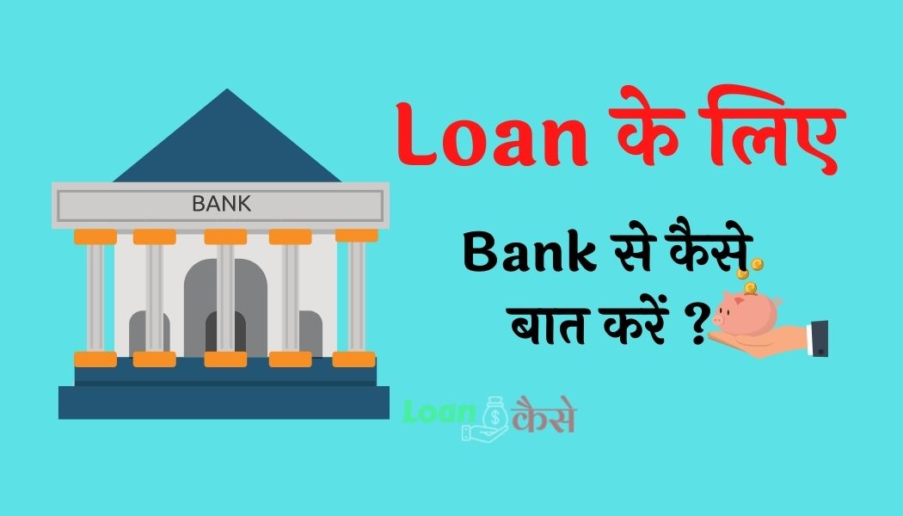

दोस्तों आज मैं आपको बताऊंगा कि जब आप कि जब आप अपने Loan का Proposal Bank में लेकर जाते हैं तो आपको ब्रांच Manager से कैसे बिहेव करना है कैसे उनसे बात करना है कैसे उनको कंवेंस करना है कि Bank Manager आपका Loan Approveकरें।
दोस्तों आपको Loan Approve करवाने के लिए उस Bank के Manager को पूरी तरह से विश्वास दिलाना होगा कि आप सच में उस बिजनेस के लायक हैं. तभी जाकर आपको Loan मिलेगा.।तो आइए जानते हैं कि अगर आप कोई नया बिजनेस शुरू करना चाहते हैं और उस बिजनेस के लिए Loan लेना चाह रहे हैं तो आप Bank Manager से या Loan डिपार्टमेंट से किस तरह से बात करेंगे किस तरह से उन्हें कन्वेंस करेंगे कि आप बिजनेस को ग्रो कर सकते हैं और साथ साथ Bank का और अपना दोनों का फायदा कर सकते हैं।
{kind=link}

दोस्तों आपको मैं नीचे कुछ स्टेप्स दे रहा हूं उसे स्टेप को आप फॉलो करेंगे तो ज्यादा चांस है कि आपको Bank से Loan मिल जाएगा।
- Phone Pe Loan Kaise मिलता है?
- बिना Documents के Loan कैसे milega?
- Early Salary Application Se Loan Kaise ले सकते हैं?
प्रॉपर Proposal बनाए उसके बाद लोन के लिए जाएँ ।
दोस्तों सबसे पहले आपको अपने प्रोजेक्ट के बारे में एक फाइल तैयार करनी है जिसमें आप डिटेल में बताएंगे की आपका बिजनेस किस तरह का है. इस केटेगरी का आप बिजनेस करना चाहते हैं और उस बिजनेस से आपका क्या फायदा होने वाला है वह बिजनेस जहां आप करना चाह रहे हैं उस एरिया में आपके प्रोडक्ट का डिमांड कितना है यह सब चीजें आपको Proposal में बताना होगा.
अपने Qualification और Experience के बारे में बताए
दोस्तों आपको Loan तभी मिलेगा जब Bank Manager पूरी तरह से समझ जाएगा कि आप सही में बिजनेस करने लायक हैं इसके लिए आपको अपना क्वालिफिकेशन बताना होगा कि क्या आप जो बिजनेस करने जा रहे हैं उस बिजनेस रिलेटेड कोई डिग्री लिए हैं या नहीं साथ-साथ जिस बिजनेस के लिए आप Loan लेने जा रहे हैं उस बिजनेस को चलाने के लिए आपके पास कोई एक्सपीरियंस है या नहीं अगर आपके पास एक्सपीरियंस होगा तो Bank Manager समझ जाएगा कि यह बिजनेस को आसानी से चला सकता है.
अपना प्रोजेक्ट रिपोर्ट बनाकर अच्छे से समझाएं:-
अपने बिजनेस रिलेटेड एक प्रोजेक्ट रिपोर्ट बनाएं और वन बाय वन करके पूरी डिटेल में Bank Manager को अपने प्रोजेक्ट के बारे में समझाएं कि इसमें कितना इन्वेस्टमेंट होगा कितना प्रोडक्शन होगा कितना सेल होगा और आपका इसमें कितना प्रॉफिट होगा साथ-साथ Bank Manager को यह भी बताएं कि फ्यूचर में इस बिजनेस का क्या स्कोप है
दोस्तों प्रोजेक्ट रिपोर्ट इस तरह से बनाएं की Bank Manager को किसी भी पेपर को देखने के लिए ज्यादा मेहनत ना करना पड़े क्योंकि उनके पास उतना टाइम नहीं होता कि सभी डॉक्यूमेंट आपके बारी-बारी से देखें.
Bank Manager के प्रोजेक्ट से संबंधित सवालों का सही सही जवाब दें
दोस्तों प्रोजेक्ट रिपोर्ट दे देने के बाद Bank Manager आपसे कुछ सवाल पूछेंगे जैसे कि आप मशीनरी कहां से खरीदेंगे रो मटेरियल कहां से खरीदेंगे इन सब चीजों के बारे में आपको Loan Proposal देने से पहले अच्छी तरह से स्टडी कर लेना है मार्केट रिसर्च कर लेना है और पूरी तैयारी करके Bank जाना है क्योंकि जब तक आप Bank Manager को कन्वेंस नहीं कर पाएंगे तब तक आप को Loan नहीं मिलेगा.
अब कुछ हम आपको टिप्स बताने जा रहे हैं जिसकी मदद से आप Loan ले सकते हैं
- रोज तो ब्रांच Manager से आपको अच्छे से बात करना है रिस्पेक्ट करते हुए बात करना है उनसे झगड़ा नहीं करना है क्योंकि हम वहां पर लड़ाई झगड़े करने नहीं गए हैं Loan लेने गए Bank Manager की भी कुछ मजबूरी होती है उन को ध्यान में रखकर हमें Loan के लिए बात करना है
- आपको उन्हें बताना है कि आपने जो भी डॉक्यूमेंट लगाया है वह बिल्कुल ह 100% Original है वह चाहे तो डॉक्यूमेंट की जांच करवा सकते हैं इससे उन्हें आप पर ट्रस्ट होगा कि यह बंदा अच्छा है गलत काम नहीं करता है
- आपने जिस स्कीम के तहत Loan Apply किया है वह स्कीम के बारे में आप उन्हें बताइए
- आप एक Manager को यह बता सकते हैं कि आपको Loan स्कीम के बारे में कहां से पता चला इससे Bank Manager आपके साथ अच्छे से बात करेंगे उन्हें समझ में आ जाएगा कि यह Loan अप्लाई करने जो आया है वह सारी जानकारी लेकर आया है पूरी तैयारी के साथ आया है तब जाकर आपका Loan Proposal को एक्सेप्ट करेंगे.
- उसके बाद आपको कुछ दिनों तक उन्हें परेशान नहीं करना है उनसे टाइम ले लेना है कि सर मैं आपसे कब मिलूं और जब वह आपको समय देंगे तब जाकर आपको Bank Manager से जाकर मिलना है
Conclusion :-
तो दोस्तों आज आपने जाना की Bank Se Loan lene ke liye kaise baat kare क्योंकि अगर आप बैंक में चले जाएँगे और अछे से बात नहीं करेंगे तो आपको लोन नहीं मिलेंगे । सबसे पहले तो bank manager आपसे loan के बारे में बात ही नहीं करेगा ,ऐसे में उपर दिए गए स्टेप्स को फ़ॉलो करके आपको जानना है कि,Bank Se Loan lene ke liye kaise baat kare ।